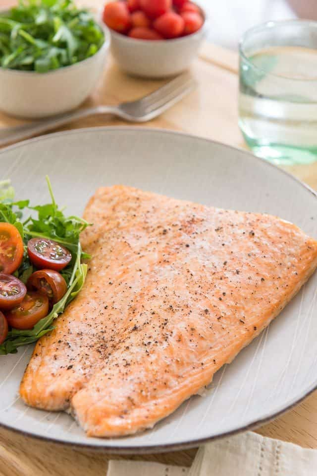

Baked Salmon

Description
This baked salmon recipe delivers soft, juicy, and tender salmon on the inside with golden crisp edges.
Ingredients
- Salmon steaks
- Soy sauce
- Salt
- Pepper
- Lemon juice
- Onion powder
- Garlic powder
- Light olive oil
Steps
- Preheat the oven to 350 degrees.
- Wash and rinse the salmon steaks.
- Coat the salmon with about 1 tablespoon of olive oil.
- Coat the salmon with a couple of tablespoon of soy sauce and squeeze juice of half a lemon.
- Sprinkle onion powder, garlic powder and salt and pepper to taste.
- Bake the steaks for about 15-20 mins until salmon meat is opaque.